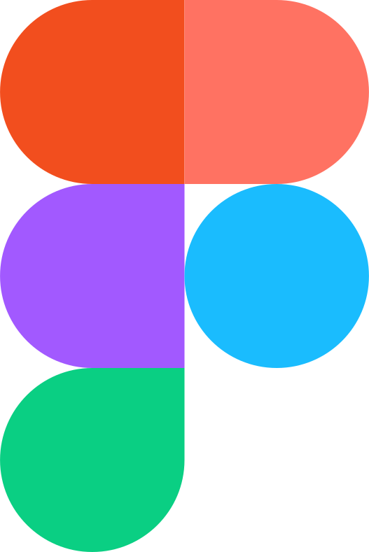

<!DOCTYPE html>
<html lang="ko">

<head>
    <meta charset="UTF-8">
    <meta name="viewport" content="width=device-width, initial-scale=1.0">
    <title>SKILLS</title>
    <link rel="stylesheet" href="./css/reset.css">
    <link rel="stylesheet" href="./css/skills.css">
    <link rel="stylesheet" href="css/font.css">
</head>

<body>
    <video src="./img/skillmov.mov" autoplay muted loop></video>
<!--     <h1 class="text">MY SKILLS</h1>
    <h1 aria-hidden="true" class="text outline-text">MY SKILLS</h1>
    <h1 aria-hidden="true" class="text filter-text">MY SKILLS</h1>

    <div id="wrapper">
        <section id="content">
            <section class="images">
                
                
                
                
                
                
                
                
                
                
                
            </section>
        </section>
    </div>
    <script src="https://assets.codepen.io/16327/gsap-latest-beta.min.js?r=v3.12.0"></script>
    <script src="https://assets.codepen.io/16327/ScrollTrigger.min.js?r=v3.12.0"></script>
    <script src="https://assets.codepen.io/16327/ScrollSmoother.min.js"></script>
    <script src="js/jquery-3.7.1.min.js"></script>

    <script>
        // 페이지 로드 완료 후 실행
        document.addEventListener("DOMContentLoaded", function () {
            let skewSetter = gsap.quickTo("img", "skewY"), // fast
                clamp = gsap.utils.clamp(-20, 20); // don't let the skew go beyond 20 degrees.

            ScrollSmoother.create({
                wrapper: "#wrapper",
                content: "#content",
                smooth: 2,
                speed: 3,
                effects: true,
                onUpdate: self => skewSetter(clamp(self.getVelocity() / -50)),
                onStop: () => skewSetter(0)
            });
        });
    </script> -->
</body>

</html>